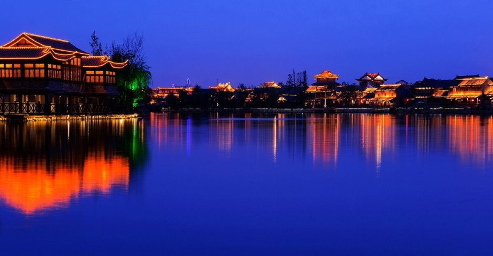
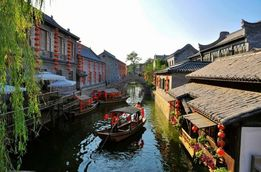
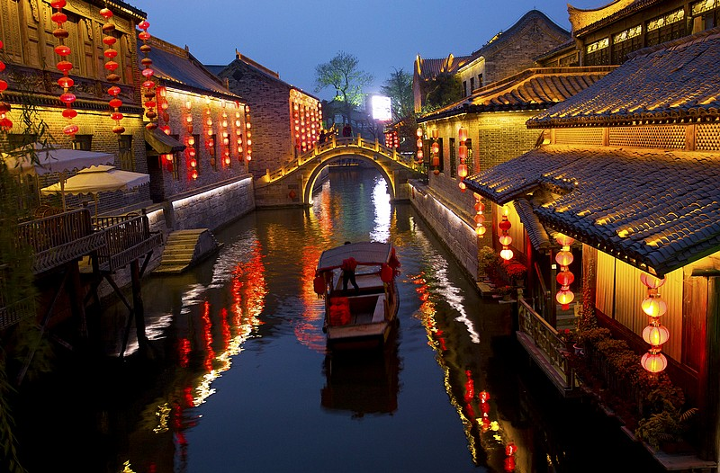
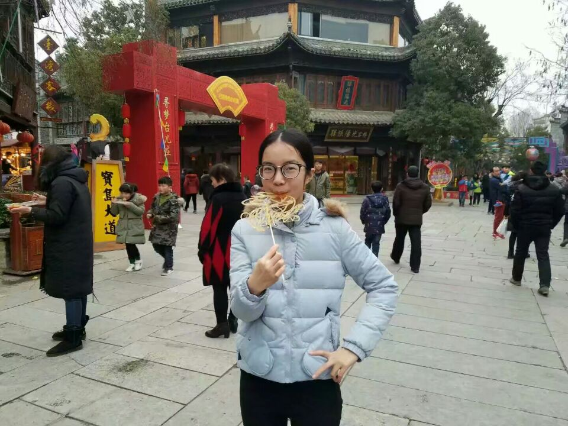
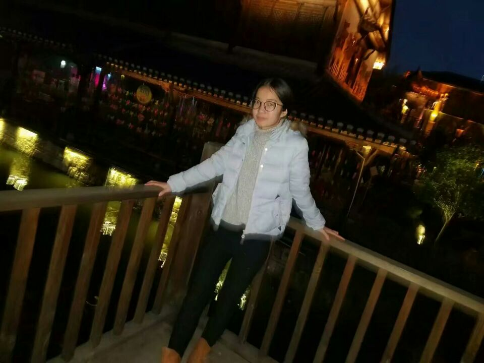
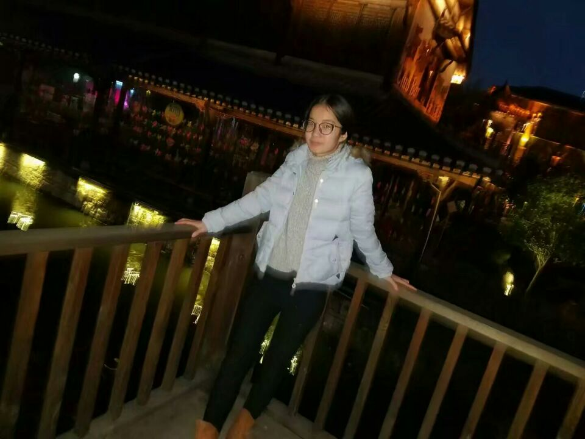
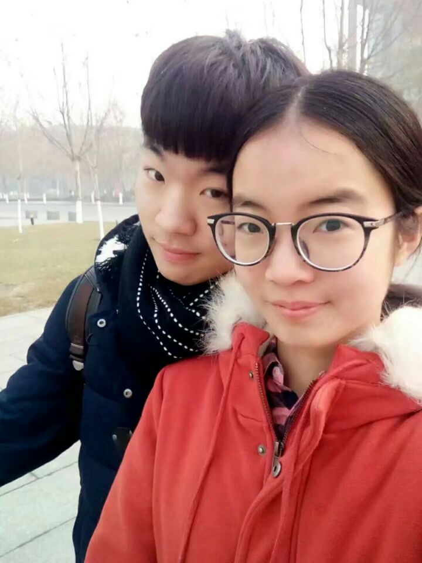

台儿庄简介
台儿庄简介
台儿庄古城，坐落于山东省枣庄市台儿庄区境内，地处山东省的最南端，既是民族精神的象征、历史的丰碑，也是运河文化的承载体，至今仍保留有不少的遗存，被世界旅游组织誉为“活着的古运河”、“京杭运河仅存的遗产村庄”。台儿庄古城占地2平方公里， 11个功能分区、8大景区和29个景点。八种建筑风格融为一体，几十座庙宇汇于一城，同时这里也是国台办批准的全国首家海峡两岸交流基地，是两岸交流的重要平台。修缮后的台儿庄运河古城，与华沙同属世界上仅有的两座因二战炮火毁坏而作为世界文化遗产重建的城市。2012年，台儿庄古城成为国家5A级旅游景区。
至尊桥这座桥是在原来的一座老桥的旧基上重建的，在寻访老桥的名字时，没有人能够回忆起来，站在桥上能够看到周围的九座桥，而桥下的这条河，连通五条水街。
占地面积38155平方米，建筑面积30295平方米，约占古城一期核心区的十分之一。主要有参将署、天后宫、翠屏学馆、台庄驿、日升昌记、文汇酒楼、谢裕大茶行、扶风堂、天水堂、三恪堂、鲁南民居、闽南民居、久和客栈、临水商铺等不同风格的明清建筑。
台儿庄历史文化深厚，形成于汉，发展于元，繁荣于明清。清代《峄县志》记载：“台(儿)庄跨漕渠，当南北孔道，商旅所萃，居民饶给，村镇之大，甲于一邑，国朝高宗（乾隆皇帝）赐为‘天下第一庄’”，呈现出“商贾迤逦，一河渔火，歌声十里，夜不罢市”的繁盛景象。1938年春发生的台儿庄大战，使这座运河古城化为废墟。2008年中共枣庄市委、市政府重建台儿庄古城。
看世界二战遗址最多的城市，要到台儿庄来；看运河文化的活化石，要到台儿庄来；看京杭运河最后一段活着的运河，要到台儿庄来；看东方古水城，要到台儿庄来。同时台儿庄古城还是大陆首个海峡两岸交流基地。台儿庄古城规划面积2平方公里，包括11个功能分区、8大景区和29个景点。截止目前，古城重建已完成20万平方米的建筑面积，累计投资达27亿元。重建后的台儿庄古城，院院不同、院院有水、院院有主题文化、院院有展馆。“台城旧志”景区和“运河街市”景区自去年“五一”试运营以来，一年共接待游客150万人，仅去年国庆黄金周就达到25万人，台儿庄古城的知名度、美誉度节节攀升，荣获2010中国旅游品牌总评榜山东分榜“十佳景区”榜首和“齐鲁文化新地标”榜首，正在成为国内重要的旅游目的地和休闲度假区。目前上海伦达投资集团、云南丽江市千里走单骑旅游公司等知名品牌企业纷纷到台儿庄古城投资开发旅游项目。
台儿庄古城，坐落于山东省枣庄市台儿庄区境内，地处山东省的最南端，既是民族精神的象征、历史的丰碑，也是运河文化的承载体，至今仍保留有不少的遗存，被世界旅游组织誉为“活着的古运河”、“京杭运河仅存的遗产村庄”。台儿庄古城占地2平方公里， 11个功能分区、8大景区和29个景点。八种建筑风格融为一体，几十座庙宇汇于一城，同时这里也是国台办批准的全国首家海峡两岸交流基地，是两岸交流的重要平台。修缮后的台儿庄运河古城，与华沙同属世界上仅有的两座因二战炮火毁坏而作为世界文化遗产重建的城市。2012年，台儿庄古城成为国家5A级旅游景区。
至尊桥这座桥是在原来的一座老桥的旧基上重建的，在寻访老桥的名字时，没有人能够回忆起来，站在桥上能够看到周围的九座桥，而桥下的这条河，连通五条水街。
占地面积38155平方米，建筑面积30295平方米，约占古城一期核心区的十分之一。主要有参将署、天后宫、翠屏学馆、台庄驿、日升昌记、文汇酒楼、谢裕大茶行、扶风堂、天水堂、三恪堂、鲁南民居、闽南民居、久和客栈、临水商铺等不同风格的明清建筑。
台儿庄历史文化深厚，形成于汉，发展于元，繁荣于明清。清代《峄县志》记载：“台(儿)庄跨漕渠，当南北孔道，商旅所萃，居民饶给，村镇之大，甲于一邑，国朝高宗（乾隆皇帝）赐为‘天下第一庄’”，呈现出“商贾迤逦，一河渔火，歌声十里，夜不罢市”的繁盛景象。1938年春发生的台儿庄大战，使这座运河古城化为废墟。2008年中共枣庄市委、市政府重建台儿庄古城。
看世界二战遗址最多的城市，要到台儿庄来；看运河文化的活化石，要到台儿庄来；看京杭运河最后一段活着的运河，要到台儿庄来；看东方古水城，要到台儿庄来。同时台儿庄古城还是大陆首个海峡两岸交流基地。台儿庄古城规划面积2平方公里，包括11个功能分区、8大景区和29个景点。截止目前，古城重建已完成20万平方米的建筑面积，累计投资达27亿元。重建后的台儿庄古城，院院不同、院院有水、院院有主题文化、院院有展馆。“台城旧志”景区和“运河街市”景区自去年“五一”试运营以来，一年共接待游客150万人，仅去年国庆黄金周就达到25万人，台儿庄古城的知名度、美誉度节节攀升，荣获2010中国旅游品牌总评榜山东分榜“十佳景区”榜首和“齐鲁文化新地标”榜首，正在成为国内重要的旅游目的地和休闲度假区。目前上海伦达投资集团、云南丽江市千里走单骑旅游公司等知名品牌企业纷纷到台儿庄古城投资开发旅游项目。



开心的我



开心的我们

哈哈哈，
我就是爱玩，
旅游可以让我玩好多，
同样增长见识，
当然了，
我爱吃好吃的！
我就是爱玩，
旅游可以让我玩好多，
同样增长见识，
当然了，
我爱吃好吃的！